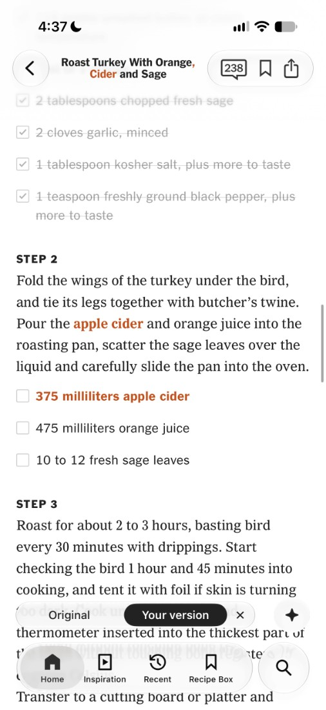
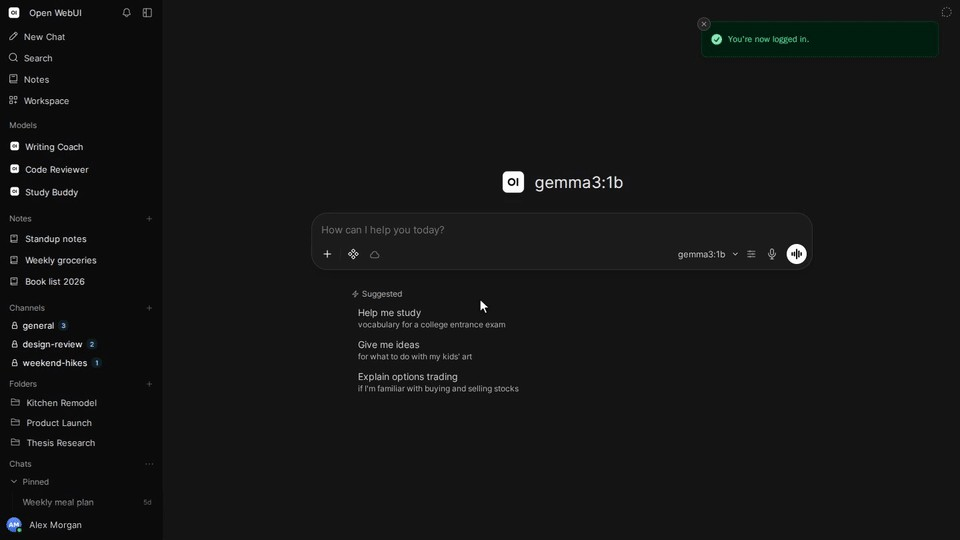
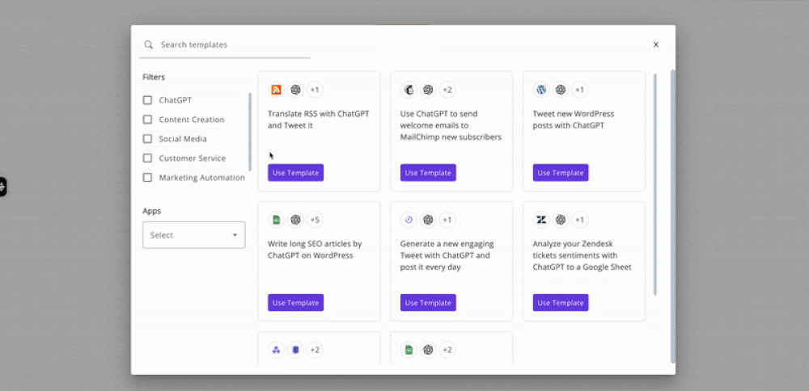
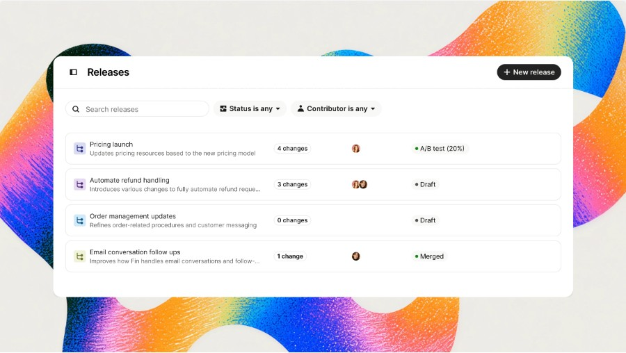
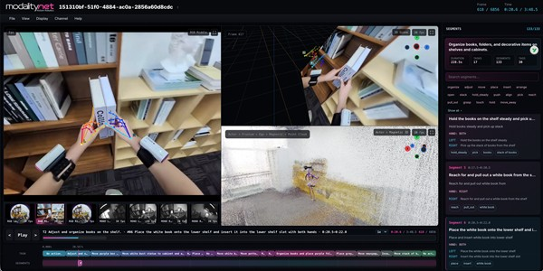
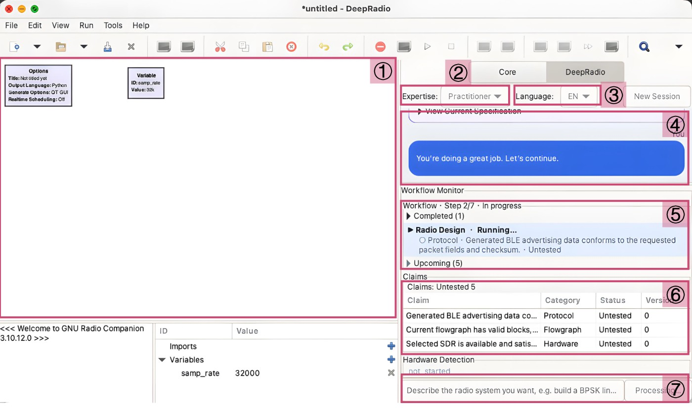
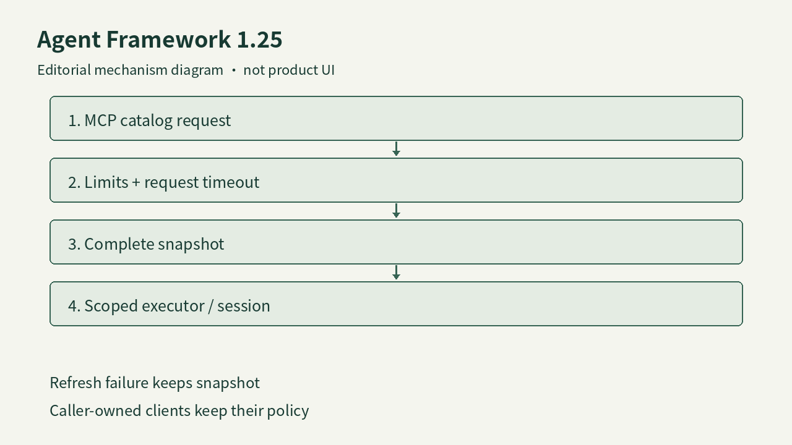

AI PRODUCT DAILY / 2026-11-09
Edit a recipe, open a terminal, teach a robot
Ingredient changes affect later steps; tool connections need clear authority; robot learning needs inspectable motion data.
November 9, 2026 · Morning edition
Explore today’s signals →
NYT supplied customized-recipe interface in WIRED, with changes in orange; not our hands-on test ↗ ProvenanceAI PRODUCT DAILY / 2026-11-09Cutoff 04:10:54 Toronto / 09:10:54 UTC
Today’s reading: edits, connections and motion
Inspect the editsRecipes, support policies and arguments need visible changes.
[S01] [S18] [S30]Connections have boundariesTerminal, MCP and row tools have distinct inputs and failure states.
[S07] [S12] [S38]Make motion inspectableTendon arms and full-body capture need concrete task evidence.
[S23] [S27] [S36] AI PRODUCT DAILY / 2026-11-09Consumer software / independent review · 2026-11-08 · 3-day / see date limits
NYT Cooking writes substitutions into the recipe; later cooking steps still need checking
NYT supplied customized-recipe interface in WIRED, with changes in orange; not our hands-on test ↗ ProvenanceEnter a substitution above the ingredients, inspect orange changes and compare with the original recipe.
Official help describes ordered sources, a source dropdown and version history.
A November 8 cooking review finds useful changes alongside a missed downstream step.
Generated variants lack the original creator’s testing or endorsement and cannot currently be saved to Recipe Box, rated or shared.
Product perspective
Follow a substituted ingredient through the whole procedure, beyond its first highlight.
AI PRODUCT DAILY / 2026-11-09Research preview / browser interaction · 2026-11-05 · 7-day review
Frameboy generates as the camera moves; custom scenes still need Viewfinder access
 World Labs supplied Frameboy demo image on Product Hunt; not our hands-on test ↗ Provenance
World Labs supplied Frameboy demo image on Product Hunt; not our hands-on test ↗ ProvenanceFrameboy lets people move a camera through curated scenes while Atlas streams new views from cloud GPUs.
Camera position and scene context drive a stream advertised at up to 15 fps; this is not local rendering.
The November 5 change is interactive exploration; its November 8 PH appearance is not another model launch.
Building a scene from your own inputs and switching to live exploration belongs to the closed Viewfinder beta.
Product perspective
Lower latency encourages experimentation; consistency when returning to an earlier view still needs testing.
AI PRODUCT DAILY / 2026-11-09Software / desktop connector update · 2026-11-08T11:07:53Z · Window observation
Open WebUI connects a computer to chat; Tether lets a phone reach the same workspace

Maintainer demo frame of the Open WebUI chat entry; it does not show this release’s terminal execution or our testing ↗ ProvenanceFor people continuing work on their own computer from a browser.
Connect Tether, select a device, then let a model or coding agent use its files and tools.
Approvals stay in chat; each conversation uses one agent.
Organizational production requires an enterprise license; local files do not imply local inference.
Product perspective
Check file and execution state after a disconnection.
AI PRODUCT DAILY / 2026-11-09Software / automation platform update · 2026-11-08T14:30:22Z · Window observation
Activepieces adds MCP OAuth connections while keeping flows inspectable before publication

Official repository template picker showing automation entry points; not a hands-on capture of the new OAuth UI ↗ ProvenanceFor teams asking AI to help maintain existing cross-app flows.
Authorize, find actions, resolve fields, validate the draft and decide whether to publish.
Version 0.93.0 adds client OAuth2; server tools have separate project scope.
Tests can affect external systems, and flow execution still incurs normal charges.
Product perspective
Check that accounts, field mappings and retries belong to the same task.
AI PRODUCT DAILY / 2026-11-09Software / official update · 2026-11-05 · 7-day review
Fin stages support changes in a release before testing them with simulated conversations

Intercom’s Releases UI with Draft, Merged and A/B test states; not our hands-on test ↗ ProvenanceSupport teams can revise content, rules and procedures together before customers encounter a partial update.
Save in a color-coded Release, define a simulated customer and checks, then inspect multi-turn results.
Results belong to a version and become stale after edits; a rollout can start with limited traffic.
Tests are not a mandatory publication gate and do not execute the downstream workflow.
Product perspective
Assign reviewers and publishing rights, and identify changes that cannot be rolled back.
AI PRODUCT DAILY / 2026-11-09Hybrid / vendor announcement · 2026-11-06 · 7-day review
AIR moves heavy motors into its torso and starts factory work with a human operator
 AIR01 product image from Embodied AI; not our field test ↗ Provenance
AIR01 product image from Embodied AI; not our field test ↗ ProvenanceAIR targets changing assembly tasks with a wheeled base and light, compliant arms; this is a November 6 announcement revisited.
A person teleoperates the task and records demonstrations; imitation learning gradually takes over while people handle exceptions.
Motors and transmissions sit in the torso; tendons move the arms to reduce moving inertia.
CE marking is planned for 2027; results from an existing dual-arm cell do not certify the complete AIR robot.
Product perspective
Measure human interventions and recovery on the actual process before estimating deployment savings.
AI PRODUCT DAILY / 2026-11-09Industrial hardware / on-site reporting and vendor specifications · 2026-11-07 · Window observation
Star walks materials between workstations; shift capacity still depends on charging and intervention
 Reporter photograph of launch-stage specifications; vendor material on screen, not a robot task test ↗ Provenance
Reporter photograph of launch-stage specifications; vendor material on screen, not a robot task test ↗ ProvenanceTOPSTAR introduced industrial biped Star on November 7 for material handling and sorting; a recent supplement.
Given materials and a destination, three camera locations observe the workspace while seven-axis arms perform transfers.
The vendor lists a ten-kilogram two-arm payload and more than four hours of endurance, not ten kilograms per arm.
Price, charging duration and shift reliability remain undisclosed; an agreement is not a delivered installation.
Product perspective
Measure transfer, recovery and charging together before estimating fewer manual handoffs.
AI PRODUCT DAILY / 2026-11-09Hybrid / vendor announcement · 2026-11-05T13:34:00Z · 7-day review
ITW-Ego Plus pairs the wearer’s view with body motion to explain how a task was done

Original ITW-Ego Plus announcement image supplied by Noitom; configuration follows the source caption ↗ ProvenanceNoitom’s November 5 announcement describes Sol headwear and small Jupiter wearables for collecting robot-training demonstrations.
Record first-person video and body motion during real tasks, with optional wrist views, external views, pressure and audio.
The paired output adds the timing of stance, reaching and body movement to what the camera saw.
Open research data and commercial corpora have different access terms; planned CoRL demonstrations are not independent performance tests.
Product perspective
Check synchronization, drift and licensing before using video hours as a proxy for trainable quality.
AI PRODUCT DAILY / 2026-11-09Paper / argument-workbench prototype · 2026-11-06T18:25:43Z · 3-day / see date limits
GroundWork makes claims and objections editable without judging the evidence for you
 GroundWork interface from the authors’ paper; not our hands-on test ↗ Provenance
GroundWork interface from the authors’ paper; not our hands-on test ↗ ProvenanceFor analysts comparing a changing set of documents.
Extract claims, evidence and assumptions; edit their relationships and accept model suggestions deliberately.
Source passages remain attached to argument components.
A four-expert formative study does not establish sustained productivity gains.
Product perspective
A connected graph can still contain a weak inference.
AI PRODUCT DAILY / 2026-11-09Paper / formal-proof research software · 2026-11-06T01:14:20Z · 7-day review
Lea connects paper annotations to Lean proofs while reserving semantic review for people
 LeaOverleaf interface in the authors’ paper, with document annotations and Lean inspection ↗ Provenance
LeaOverleaf interface in the authors’ paper, with document annotations and Lean inspection ↗ ProvenanceMathematicians can start from chat or theorem annotations in Overleaf.
A shared backend manages dependencies and returns Lean status to the document.
Formalized, verified and human-audited states remain distinct; relevant edits invalidate results.
Evidence is one case study; cross-domain comparison and concurrent collaboration remain open.
Product perspective
Inspect the machine-checked statement before accepting its correspondence to the original claim.
AI PRODUCT DAILY / 2026-11-09Paper / software-defined-radio prototype · 2026-11-06T12:49:10Z · 3-day / see date limits
DeepRadio exposes radio assumptions and evidence before asking to transmit

GNU Radio Companion and DeepRadio panel from the authors’ paper; not our hands-on test ↗ ProvenanceA GNU Radio workspace connects a spoken or written goal to an editable flowgraph.
Parameter provenance and version-bound checks precede bounded hardware operation.
A running process or visible spectrum does not establish successful reception.
Seven task categories and a 20-person study; code release is still planned.
Product perspective
The operator needs to understand the planned physical action.
AI PRODUCT DAILY / 2026-11-09Paper / clinical-motion interpretation research · 2026-11-05T23:37:02Z · 7-day review
MotionDecipher structures gait waveforms before drafting descriptions, without prescribing treatment
 Signal-to-report workflow from the authors’ paper; not a commercial product interface ↗ Provenance
Signal-to-report workflow from the authors’ paper; not a commercial product interface ↗ ProvenanceA research pipeline converts joint-angle and ground-reaction-force data into gait descriptions.
Extract domain features, retrieve examples and draft a report organized by body part.
Validation used laboratory motion capture and force plates, not a phone-ready service.
122 patients and 46 controls; treatment outcomes and low-cost sensing remain unproven.
Product perspective
A reviewer needs to trace each description to the signal and gait phase.
AI PRODUCT DAILY / 2026-11-09Open-source framework / SDK update · 2026-11-08T19:39:30Z · Window observation
CrewAI routes spreadsheet inputs through row tools and records evaluation failures explicitly
 Editorial SDK data and failure-state diagram based on release notes; not product UI or a tested trace ↗ Provenance
Editorial SDK data and failure-state diagram based on release notes; not product UI or a tested trace ↗ ProvenanceFor developers giving agents spreadsheet and multi-step tasks.
A spreadsheet URL and task enter the agent; tools process rows and return results.
Adds row-oriented input while correcting evaluation and script-failure reporting.
Check provider, parameters and output contracts before accepting a changed default.
Product perspective
Row identifiers and explicit failures make results easier to audit than a final summary alone.
AI PRODUCT DAILY / 2026-11-09Open-source framework / SDK update · 2026-11-07 · 3-day / see date limits
Agent Framework bounds tool discovery and keeps a complete catalog when refresh fails

Editorial diagram of catalog refresh and authorization scope based on 1.25.0 migration notes; not product UI ↗ ProvenanceFor teams connecting agent applications to several MCP services.
Discover the catalog, check scope, select tools and execute within the matching session.
Bounds catalog size and preserves a complete snapshot when refresh fails.
Requires Python 3.11+; caller-owned clients retain their own timeout and lifecycle policy.
Product perspective
Test interrupted refreshes and separate users when checking the upgrade.